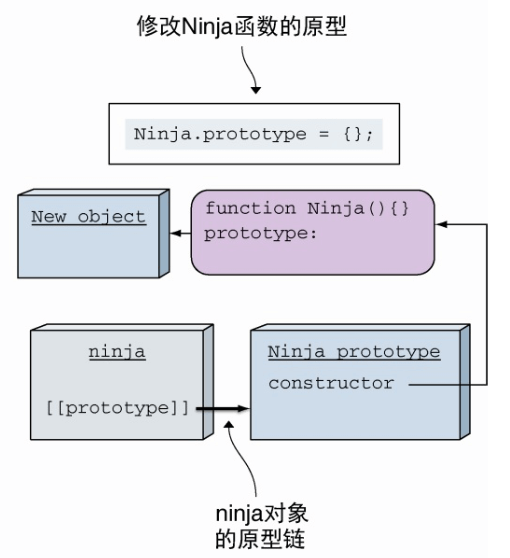

JavaScript 要点记录
遗留问题
闭包 closure 和作用域
闭包
函数作为入参或返回值都有可能形成闭包（特殊的作用域）。这是因为，函数的执行会创建作用域，作用域形成作用域链，作用域链又会存在分支，因此作用域有了父子、兄弟关系，作用域中传递的是变量，当使用变量的作用域不是定义变量的作用域的子作用域的时候，一定会产生闭包，这一策略使闭包里的变量让函数正常引用变量、正常执行。
闭包很常见，例如可以观察 forEach 检测是否形成了闭包：这里 forEach 的回调是监听一串 li 的点击事件，点击后打印 li 的序号（及 forEach 回调的第二参）。点击 li 后发现打印出了对应的序号，和这个现象作对比的是将 forEach 替换成 for 循环，结果将始终打印 1 个值
在上述 forEach 的例子，往监听的回调函数添加断点后，点击某个 li 就看见了 DevTools 内 Sources 下的 Scope 面板出现了 Closure 这个特殊的作用域（下方图）。想用 for 循环完成这样的工作，可以给监听的回调使用 bind 或裸 IIFE 返回函数（IIFE 内定义变量存储 index，返回的函数中使用），后者利用了闭包。

上图中，我点击了第一个’l’，应该打印 2。
在日常开发中，复杂度不高、无需使用 new 实例保存状态时，就使用返回函数创建闭包的方法，这样每返回的一个函数就是一个全新作用域，来代表一个全新状态，好处是避免了重复逻辑代码。具体的例子就是防抖节流时 timer，还有向回调函数传参，比如给点击时间的回调传参。下面是一个能直接运行的例子：
1 | function returnF() |
直接使用闭包会导致内存无法释放，下面进行释放内存的例子，浏览器中使用 DevTools / Memory 的 Allocation instrumentation on timeline 查看释放前后对比区别：
1 | function returnF() { |
作用域
this
this 很好理解，this 总是会出现在实例中，指向（代表）当前实例。
this 的注意点：调用全局方法时，指向 window；箭头函数没有自己的 this（无法通过 apply, call, bind 方法指定 this），但是会继承上层作用域的 this。
运行 fn() 和 new fn() 区分各自作用域中的 this
1 | var a = 10 |
模拟 bind：
1 | Function.prototype.bind1 = function() |
模拟 call：
- apply 以数组或集合的方式传入；
- call 和 bind 以多参数传入；
1 | Function.prototype.call1 = function(t) |
闭包 (计算机科学)：wiki，闭包的理论。
闭包：mozilla 对比包的解释，有很多例子。
闭包的起源：掘金一篇关于闭包的博文。
对象
模拟继承
这样继承不会出现子类的构造器是父类的错误：
1 | function Person() {} |
模拟继承的几个关键：
Person.call(this);，用于复制父类的属性；Ninja.prototype = Object.create(Person.prototype);，把父类作为子类的原型，用于获取父类的方法；Ninja.prototype.constructor = Person;（或者使用 Object.defineProperty 另构造器不可枚举），用于维持类的正确性，使子类的构造函数是自己而不是父类。
相关链接：
- 扎实前端系列：JavaScript实现继承
- Javascript实现继承的6种方式
- 用 Object.create() 实现类式继承
- JavaScript 中对象的 constructor 属性的作用是什么？——模拟继承过程中会改变子类的构造器，为什么修改？
- Object.prototype.constructor-MDN
- JavaScript常用八种继承方案
instanceof 的警告：构造函数原型的改变会导致 instanceof 返回否。
Object.create(null)和{}：{} 创建的对象继承了 Object 自身，OCN 创建的对象则是干净的对象，可以使用Object.create(Object.prototype)达到和{}相同的效果。
关联博文：详解Object.create(null)；Object.create()。
Object.getOwnPropertyNames()：
- 返回自身属性，包括不可枚举属性，不包括 Symbol 值作为名称的属性；
- 该方法使用 Array.prototype.filter() 方法结合 Object.keys() 计算出所有不可枚举属性；
- ES5 中该方法的入参不是原始对象类型会报异常。
Object.prototype.hasOwnProperty()：
- 检测一个对象是否有特定的自身属性；和 in 不同，该方法忽略从原型链上继承的属性；
- 无视属性值为 null 或 undefined，只要有键即返回 true；
- 直接使用原型上的该方法，Object.prototype.hasOwnProperty.call(foo, ‘bar’)，这样防止对象把继承的 hasOwnProperty 方法覆盖了，无法发挥正确作用。
关于如何检测对象中的某个键
有两种方式创建对象，
1 | var p = {}; |
，通过Object.prototype.hasOwnProperty.call(p, "toString");检测。
在上面的方法 1 中，不可以使用p.hasOwnProperty("toString");，因为不能保证 p 是否添加了属性 hasOwnProperty。在上面的方法 2 中，不能使用if (p['toString'])来检测，即使 p2 没有继承 Object，但是也不能确定会不会有类似false、null、undefined、0或NaN之类的值
相关链接：Is creating JS object with Object.create(null) the same as {}?
对象、函数和构造器的关系图

- 所有对象原型的原型都指向 Object.prototype，有 1 个例外；
- 所有函数的原型都指向 Function.prototype；
- 实例指向各自的对象原型；
- Object.prototype 的原型指向 null，是 1 个例外。
获取实例和对象的原型
1 | function F() {} |
通过Object.getPrototypeOf获取实例或对象的原型：
1 | Object.getPrototypeOf(Object.getPrototypeOf(Object.getPrototypeOf(f))); // null |
通过__proto__可以达到一样的效果，但__proto__是浏览器实现的特性，不是标准，所以通常还是使用Object.getPrototypeOf：
1 | f.__proto__.__proto__.__proto__; // null |
### getter 和 setter 的使用
对象由属性和值组成，属性又分为两种，第一种叫做数据属性，例如“{ a: 1 }”里的 a，另一种叫做访问器属性(accessor property)，就是这里的 getter 和 setter。
访问器属性的描述符和数据属性的描述符不同，访问器属性的描述符相比没有 value 和 writable 属性，但是多了 set 和 get 属性：
1 | // 数据属性的描述符 |
1 | // 访问器属性的描述符 |
初始化对象之后，通过“Object.defineProperty”创建访问器属性：
1 | var o = { a: 0 }; |
使用：可以为属性做限制，例如这里利用 set 限制名字的长度必须小于 4，
1 | let user = { |
相关链接：
- 属性的 getter 和 setter—— JAVASCRIPT.INFO 上的教程；
- getter：MDN 文档。
一些关于对象或关于获取对象属性的方法
Object.getOwnPropertyNames：获取非原型链上的可枚举和不可枚举的属性。
for...in：用于对象而不是数组，遍历可枚举属性，包括原型链上的。
Object.prototype.hasOwnProperty：通常用“Object.prototype.hasOwnProperty.call(foo, "bar");”的方式检测对象里是否有某属性，属性可枚举或者不可枚举，但不能在原型链上。
Object.keys
Object.create
“Object.create(Object.prototype)”相当于“{}”。
“Object.create(null)”可以用于存储数据，因为它没有原型链，但是要注意例如“"abc" + Object.create(null)”这样的代码会报错，少去了继承原型链的方法，一些曾经便于调试的默认行为也就没有了。
Object.assign
使用Object.assign拷贝访问器，会忽略 set，并直接使用 get 的 return。
完整拷贝访问器：
1 | function completeAssign(target, ...sources) { |
Object.assign 和展开符的区别：由于 Object.assign 会修改传入的第一个对象，所以它会触发第一个对象里的 setter，
1 | Object.assign({ |
相关链接：
- [译] Object.assign 和 Object Spread 之争, 用谁？；
- Object spread vs. Object.assign；
- MDN-Object.defineProperty()——关于数据描述符和存取描述符。
Object.defineProperty
相关链接
- [译] JavaScript 引擎基础：Shapes 和 Inline Caches：引擎是怎么处理原型的，解释了“为什么不要随便改原型”；
- [译] JavaScript 引擎基础：原型优化：引擎是怎么处理原型的，解释了“为什么不要随便改原型”；
- typeof-Real-world usage：typeof 的真实使用。
Symbol
Symbol.toStringTag
有时我们希望判断数据类型，会用到Object.prototype.toString.call(data)，执行这句会得到类似[object String]的结果，这是因为toString读取了实例的Symbol.toStringTag属性。
1 | var a = new Map(); |
如果没有主动设置 toStringTag，就是默认的[object Object]，如果要自定义，就要设置toStringTag。
1 | var f = function() {}; |
相关链接：
Proxy
紹介しょうかい：代理，访问目标对象前拦截它，并对该访问进行过滤和改写，它在 API 使用者和对象间是中间人角色。生成 Proxy 实例的例子：var proxy = new Proxy(target, handler);，target 是目标对象，handler 是用于拦截的处理器（trap）对象。
借助代理并定义明确的规则来禁止访问 target 对象的某些属性，对外只暴露代理而不暴露 target 对象（target 应该对使用者完全隐藏）。
handler 对象的方法：handler.getPrototypeOf()，Object.getPrototypeOf 方法的捕捉器；handler.setPrototypeOf()，Object.setPrototypeOf 方法的捕捉器；handler.isExtensible()，Object.isExtensible 方法的捕捉器；handler.preventExtensions()，Object.preventExtensions 方法的捕捉器；handler.getOwnPropertyDescriptor()，Object.getOwnPropertyDescriptor 方法的捕捉器；handler.defineProperty()，Object.defineProperty 方法的捕捉器；handler.has()，in 操作符的捕捉器；handler.get()，属性读取操作的捕捉器；handler.set()，属性设置操作的捕捉器；handler.deleteProperty()，delete 操作符的捕捉器；handler.ownKeys()，Object.getOwnPropertyNames 方法和 Object.getOwnPropertySymbols 方法的捕捉器；handler.apply()，函数调用操作的捕捉器；handler.construct()，new 操作符的捕捉器。メソッドの紹介：https://es6.ruanyifeng.com/#docs/proxy#get；https://developer.mozilla.org/zh-CN/docs/Web/JavaScript/Reference/Global_Objects/Proxy。
Proxy 的 静的せいてきメサット：Proxy.revocable()，示例：let {proxy, revoke} = Proxy.revocable(target, handler);，执行返回的 revoke 函数后就不能使用 proxy 实例了。
Proxy 实例的 this：Proxy 代理的目标对象 this 指向生成的实例，因此会无法直接访问一些属性或方法。
get：如需要“禁止访问下划线开头的属性”的时候使用，访问的时候抛错让使用者知道这些属性不可通过代理访问。
set：如需要“禁止设置下划线开头的属性”的时候使用；如需要“模式验证”的时候使用，例如让 age 属性只能是数字和大于零；如需要“限制通过代理设置属性的次数”的时候使用，结合 revocable。
使用处理器方法实现链式操作（get）、限制属性值大于 0（set）等例子：https://es6.ruanyifeng.com/#docs/proxy#get
[实现限制 age 的值大于 0](#实现限制 age 的值大于 0)
Reflect
Reflect の設計せっけい目的：存储语言内部方法；返回合理结果（catch 和 bool）；使操作变为函数行为而非命令式；配合 Proxy。
Reflect 的方法和 Proxy 的所有拦截方法对应。
has 和 deleteProperty 的用法：
1 | var obj = { foo: 1 } |
Thunk 函数
关于函数参数求值时机的问题，有“传值调用（call by value）”和“传名调用（call by name, cbn）”的意见，cbn 的实现往往把参数放到一个叫 Thunk 函数的临时函数中，用来替换表达式参数，而在 JavaScript 里则是用来替换入参多参数成为单参数。
简单的 Thunk 函数转换器：
1 | var Thunk = function(fn) |
https://es6.ruanyifeng.com/?search=thunk&x=0&y=0#docs/generator-async#Thunk-%E5%87%BD%E6%95%B0
Promise
简单回调函数的 3 个问题：错误处理困难；相互依赖的“金字塔噩梦”；并行任务的棘手样板代码。
创建 Promise 的 4 个方式：fetch；Promise.resolve；Promise.reject；Promise 的构造函数。
promise 对象的状态：pending 挂起，未实现；fulfilled 兑现承诺，实现；rejected 违背承诺，拒绝态。
Promise 对象构造函数的参数：该参数是函数，执行成功进入 fulfilled，执行失败（隐式或显式）进入 rejected，否则 pending。
Promise 的回调函数：成功和失败的回调可以同时在 then 方法中（错误函数在 then 的第二参数），也能链式调用分别在 then 和 catch 方法内。
如果不是处理互相依赖的任务，并行任务使用 Promise.all，竞赛任务使用 Promise.race，两个方法的参数都是 1 个 Promise 数组。
Promise 结合 Generator 完成互相依赖的异步任务：
1 | async(generator); |
在线工具解释 Promise 链（Promise 连缀调用的树型结构）：https://bevacqua.github.io/promisees。
Promise A+：https://juejin.cn/post/6844903649852784647。
迭代与流程控制
迭代器协议和可迭代协议
普通对象要变成可迭代的，必须要：给对象的 Symbol.iterator 属性赋值一个函数。下面是一段示例：
1 | // ES6 之前 |
上面代码中，fn 函数必须返回一个对象，该对象必须遵守迭代器协议。下面通过例子说明这个协议：
1 | const items = ['l', 'e', 'n', 'n', 'o', 'n'] |
上面代码中包含的迭代器协议，迭代器方法返回的对象必须有 next 方法，next 方法不接受参数，并且返回包含 value 和 done 的对象。
3 种迭代办法：for..of；扩展操作符；Array.from 方法。
无穷序列 ∞
Generator
生成器是，创建一个生成器函数（function 关键字后的星号），调用它，即返回一个生成器对象。下面的一段示例说明生成器对象同时遵守可迭代协议和迭代器协议：
1 | function* abc() { yield 'a'; yield 'b'; yield 'c'; } |
以上，函数 abc 之后的逐行代码分别表示：
- 生成器对象 chars 通过调用函数 abc 创建；
- chars 是可迭代对象，因为它有方法 Symbol.iterator；
- chars 是迭代器，因为它有方法 next；
- chars 自己就是迭代器，而一般的可迭代对象的迭代器是 i[Symbol.iterator]()，i 是可迭代对象。
生成器函数参数发送值：正常参数。
next 发送值：值是上一次被挂起的 yield 表达式的最终结果。
生成器的双向通信：通过 yield 从生成器返回值（中间结果），通过迭代器 next() 把值传回生成器。
抛出异常：异常将抛回生成器。
async function
利用 async 和 promise 完成同步等待：
1 | function sleep(milliS) |
Class
类定义的 toString 方法与 ES5 function 定义的行为不一致，类定义的不可枚举：
1 | var Point = function(x, y) {}; |
__proto__ の特性とくせい：这是各浏览器厂商实现的私有属性，我们使用 Object.getPrototypeOf 方法避免在生产环境依赖私有属性。当修改实例的原型时这么用。
クラス式しきは、名前付きなまえつきでも名前なしでもできます：const Myclass = class {};
集合
数组
プロパテイ：constructor, length, [@@unscopables].
メソッド：変更メソッド、アクセサメソッド、反復メソッド。
変更へんこう：copyWithin, fill, pop, push, reverse, shift, sort, splice, unshift.
アクセサ：concat, includes, indexOf, join, lastIndexOf, slice, toSource, toString, toLocalString.
反復はんぷく：entries, every, filter, find, findIndex, forEach, keys, map, reduce, reduceRight, some, values, [@@iterator].
第一类修改器方法都不是纯函数（不改变原数组，返回一个数组），它们都修改了原函数。
shift 的选择：使用 shift 和 unshift 之后每一个索引都要调整，存在性能问题。
slice 和 splice：slice 是纯函数，抽取一段，splice 则是拼接（替换）一段，在原数组上可以拼接一段空也能拼接一段有意义的数据。
split 和 join：split 是 String 的方法，以符号分割成数组，join 以符号合并数组元素成字符串，'1-2-3'.split('-'); [1, 2, 3].join('-');。
1 | var arr1 = arr.concat([50, 60]); |
reduce() 方法：
- 構文こうぶん，arr.reduce(callback(accumulator, currentValue[, index[, array]]), initialValue)；
1 | let maxCallback = (acc, cur) => Math.max(acc.x, cur.x); |
数组去重的办法：利用 Set；forEach 结合 indexOf；filter 结合 indexOf。下面用代码说明举例：
1 | const a = [3, 3, 5, 5]; |
Map 数据结构
对象类型数据的 key 必须是字符串。当使用非字符串类型如 HTML 元素作为 key 时，其值被 toString 方法转为字符串类型。
1 | const firstE = document.getElementById("f"); |
向 Map 添加成员，作为构造函数，可以接受数组作为参数。
1 | const map = new Map([ |
Map 的键和内存地址绑定，这能解决了同名属性碰撞（clash）的问题。
两个值严格相等，Map 则视为同一个键，NaN除外，即使 NaN!==NaN，Map 也视为同一个键。0, -0, +0 被视为一个键。
| Map | Object | |
|---|---|---|
| 意外的键 | Map 只有显式插入的键 | 有原型，可能被显式插入的覆盖 |
| 键的类型 | 任意值 | String 或 Symbol |
| 键的顺序 | 有序，插入顺序 | 无序* |
| Size | size 属性 | 手动计算 |
| 迭代 | 可迭代 | 迭代的前提是获取键 |
| 性能 | 适合频繁增删 | 不适合频繁增删 |
Web 开发技术请参见 - JavaScript请参见 - JavaScript 参考请参见 - JavaScript 标准内置对象 - Map - https://developer.mozilla.org/zh-CN/docs/Web/JavaScript/Reference/Global_Objects/Map
实例属性和方法
Map 的方法和属性：
- new Map()
- map.set(key, value)
- map.get(key)
- map.has(key)
- map.delete(key)
- map.clear()
- map.size
Map 迭代：
- map.keys()
- map.values()
- map.entries()
map.forEach(func)
从对象创建 Map 和从 Map创建对象：
[[...], [...], ...]这样形式的数组，Map 通过 map.entries 生成，Object 通过 Object.entries(obj) 生成；要生成 Map 或 Object 都可以依赖这样形式的数组，生成 Map 通过 new Map(arr)，生成 Object 通过 Object.fromEntries。
1 | Map 的默认遍历器接口是 entries 方法 |
1 | // Map 结合 数组的map方法、filter方法 |
Set 数据结构
Set 里 NaN 和 NaN 相同，+0 和 -0 相同。
1 | let s = new Set() |
使用 Set 实现基本集合操作：https://developer.mozilla.org/zh-CN/docs/Web/JavaScript/Reference/Global_Objects/Set。
操作符
typeof：识别所有值类型；识别函数；判断是否引用类型（不可再细分）。
instanceof：
检测构造函数的 prototype 是否在实例的原型链上。
instanceof 的警告：构造函数原型改变将导致 instanceof 返回否。
1 | function Ninja() {} |
ninja 对象的原型链上不存在 Ninja 函数的原型（一个新的空对象），instanceof 操作符返回 false

in
在判断全局对象 window 上有没有定义变量z的时候，使用 in 比 typeof 和 window.z 更安全：
- 如果在
typeof z后面执行let/const z（即使之前执行了var z），将产生“暂存死区temporal dead-zone”，即 typeof 报错（Uncaught ReferenceError: z is not defined（如果执行了var z会报Uncaught SyntaxError: Identifier 'z' has already been declared））； window.z可能会有 falsely 值false, 0, "", NaN, null, undefined，不鲁棒robust；- 请考虑
'z' in window或Reflect.has(window, 'z')。
Reference
事件循环
相关链接：
- 浏览器多进程和事件循环详解；
- 并发模型与事件循环——MDN 的事件循环教程；
- JavaScript 运行机制详解：再谈Event Loop——阮一峰的事件循环教程；
- loupe——可视化事件循环；
- [JS] 理解 JavaScript 中的事件循環、堆疊、佇列和併發模式（Learn event loop, stack, queue, and concurrency mode of JavaScript in depth）——“整理自 Philip Roberts 在 JS Conf 的演講影片”；
- Jake Archibald: 在循环 - JSConf.Asia——讲解了事件环、requestAnimationFrame 和微任务的关系。
console
相关链接：
浏览器模型
Web Worker
https://wangdoc.com/javascript/bom/webworker.html
XMLHttpRequest
你真的会使用XMLHttpRequest吗？ https://segmentfault.com/a/1190000004322487
应用
深拷贝
为了避免浅拷贝和直接引用地址使用深拷贝。
1 | function deepClone(obj = {}) { |
递归深入，跳出递归的条件：参数不是对象类型（除了 null 对象）。
执行“JSON.parse(JSON.stringify(obj))”进行简单的深拷贝，这种方法的问题：
时间对象 -> 时间字符串new Date()- RegExp、Error 对象 -> 空对象
new RegExp('\\w+') - function、undefined -> 丢失
- NaN、Infinity、-Infinity -> NULL
- 构造函数生成值 -> 丢失值的 constructor
p: new Person('chen')；clone.p.__proto__.constructor === Object - 循环引用报错
obj.obj = obj
数组拍平
1 | function flat(arr) |
这里的关键是 apply 和 concat 方法。前者的一个入参是数组，这个数组的每个元素将作为执行函数的每个入参；后者将接收的入参生成数组变成数组里的一个个元素。这两者结合，会逐层消去数组方括号。
相等判断
如果要区分-0和+0，使用-0 === +0会返回 true，因此不能区分，可以利用 Infinity 判断，也就是1/-0 === 1/+0，这样将返回 false。
== 的一些执行结果：
1 | 100 == '100' // true |
if 语句和逻辑运算里决定结果的 truely 和 falsely：
1 | // truly 变量即 !!variable === true |
类型转换的发生场景：字符串拼接；==；if 语句和逻辑运算
相关链接：
可访问性
给 img 标签添加 alt 属性。
将 user-scalable 设置为 no 会阻止一切意义上的缩放，视力不好的人可能会因此无法阅读和理解页面内容。——MDN
相关链接：
- <img> 无障碍考量；
- 响应式图片——MDN 的教程；
- 响应式图片中srcset遇到的问题——对 MDN 教程里给出的示例无法运行的思考；
- 响应式图像教程：阮一峰的响应式教程；
- 提供响应式图像——咕果教程。
安全性
同源策略：ajax 请求时，浏览器当前网页和 server 必须同源（协议、域名、端口三者一致），但是图片（统计打点，第三方统计服务）、样式（CDN）和脚本（CDN, JSONP）的加载都无视同源。
http://www.ruanyifeng.com/blog/2016/04/same-origin-policy.html
避免同源，跨域的方法：JSONP；CORS；WebSocket。
JSONP：因为服务端可以返回任意数据，script 标签可以实现跨域，因此只要服务端愿意返回数据（合法 js 格式），就实现了获取跨域数据。
关于 CORS：
- http://www.ruanyifeng.com/blog/2016/04/cors.html；
- 有一些公共接口，通常用来测试 ajax 请求在应用中正常运作的状态，比如 https://dog.ceo/api/breeds/image/random，自己的应用中请求它将开启 cors，请求头中可以看见 origin 字段，响应头中可以看见 access-control-allow-origin 字段；
- cors 有简单请求和非简单请求，请求方法是
HEAD, GET, POST之一，HTTP 头信息不超出Accept, Accept-Language, Content-Language, Last-Event-ID, Content-Type这些字段，满足这两个条件就是简单请求，其它是非简单请求； - cors 中预检（preflight）请求的作用，preflight 出现在非简单请求中，客户端在正式发出请求前“先询问服务器，当前网页所在的域名是否在服务器的许可名单之中，以及可以使用哪些HTTP动词和头信息字段”，如果得到否定回复，触发的错误将被 XMLHttpRequest 的 onerror 回调函数捕捉；
- 実践じっせん CORS：https://www.cnblogs.com/MrSaver/p/11202319.html。
关于 XSS：
- Cross Site Scripting，跨站脚本攻击；
- 反射型 XSS，由用户触发，危险代码只作用当前用户，由服务端渲染网页；
- 存储型 XSS，由用户触发，危险代码被存储到服务器中，在其它用户请求网页的时候将渲染到危险代码，存储型 XSS 波及所有访问用户；
- 基于 DOM 的 XSS，由用户触发，危险代码只作用当前用户，由前端渲染网页；
- 嵌入 script 脚本，收割 cookie；
- XSS 攻击的处理 https://blog.alswl.com/2017/05/xss/；
- XSS 预防工具 https://github.com/leizongmin/js-xss/blob/master/README.zh.md。
关于 XSS 的防范：
- CSP 防御，为 http 响应头配置 Content-Security-Policy；
- 对用户输入的字符串进行白名单校验；
- 提防如
href、src属性的值，进行白名单校验，因为它们会执行字符串； - 注意一些 api，例如
innerHTML、outerHTML、document.write、location、onclick、onerror、onload、onmouseover； - React 中，避免把用户提供的字符串作为 jsx 属性；
- 如果 cookie 设计隐私，设置 http-only
1 | const userProvidePropsString = `{"dangerouslySetInnerHTML":{"__html":"<img onerror='alert(\\"xss\\");' src='empty.png' />"}}`; |
关于 CSRF：
- Cross Site Request Forgery，跨站请求伪造；
- 利用 token，验证码，进行防护。
关于 clickjacking：利用 iframe 点击劫持。
阮一峰-图解 SSL/TLS 协议：http://www.ruanyifeng.com/blog/2014/09/illustration-ssl.html。
相关链接：
- [ Security ] WEB安全(一)之图解XSS注入；
- [ Security ] WEB安全(二)之图解 CSRF 注入；
- 浅谈 React 中的 XSS 攻击；
- XSS game——XSS 游戏；
- XSS攻击，这次一定会！；
- 前端安全系列（一）：如何防止XSS攻击？——美团技术文章；
- 前端安全系列之二：如何防止CSRF攻击？——美团技术文章；
- 空谈Security攻击方法之CSRF和XSS——作者介绍了 XSS、CSRF 和 CORS 间的关系；
- Web Security 之 CSRF；
- HTTP Referer 教程——CSRF 的预防；
- Content Security Policy 入门教程——XSS 的预防。
设计模式
单例模式：
1 | // 使用闭包实现单例模式 |
观察模式：
1 | // 观察者实现一个通知方法（用于被目标对象通知） |
发布订阅模式：
1 | class Channel { |
性能
Performance API
以下会列举大量关于 timing 属性的例子，但是Performance.timing已废弃，将来替代者为Performance.timeOrigin。
window.performace 性能指标：[Promt for unload] –navigationStart–redirectStart– [redirect] –redirectEnd–fetchStart– [App cache] –domainLookupStart– [DNS] –domainLookupEnd–connectStart– [TCP] –connectEnd–requestStart– [Request] –responseStart– [Response] –responseEnd–domLoading– [Processing] –domComplete–loadEventStart– [onLoad] –loadEventEnd；unloadStart– [unload] –unloadEnd；TCP 节点内可能会有 secureConnectionStart；Processing 节点内有domInteractive, domContentLoaded。
Performance API 的常用指标计算：下面是一些例子
1 | const timingInfo = window.performance.timing; |
开发者工具 Performance 面板 Timings 栏的性能指标：
FP(First Paint)，任一元素首次渲染时间；
FCP(First Contentful Paint)，白屏时间；
DCL(DOMContentLoaded Event)；
FMP(First Meaningful Paint)，首次有意义内容出现；
（TTI, Time To Interactive）；
L(Onload Event)。
PageSpeed Insights：谷歌的页面性能分析工具，提供了优化建议。
分析运行时性能：谷歌 DevTools 官网里的性能部分，是对 DevTools Performance 面板的讲解。
WEBPAGETEST：这个网页输入页面，会返回页面性能相关内容，这个网站在我了解 LCP 计算方法的时候收集到（目测比较原始、专业）。
ImageOptim：这是 Mac 上压缩图片的应用，从WEBPAGETEST这个网站的“Did you know…”内容跳转找到。
缩短 TTFB（time to first byte）时间：
- TTFB = time request response round trip delay + time server proccessing
- 测 client 到 server 之间的 RTT（round-trip time）
- 看 server 处理每个请求的时间
在页面构建的不同阶段触发动作：
1 | // DOM 树加载完毕 |
事件代理：
- e.target 获取触发元素
- matches 判断是否触发元素
节流：监听鼠标滑动时，节流避免频繁计算；节流和接下来的防抖都是闭包的应用；
1 | function throttle(fn, delay = 500, context) |
防抖：需要依据表单输入内容发出请求时，使用防抖把请求集中在停止输入的一段时间后，避免频繁请求；监听屏幕宽度时，使用防抖在停止改变屏幕宽度的一段时间后执行动作，避免频繁计算；
1 | function debounce(fn, delay = 500, context) |
聊聊lodash的debounce实现：了解 AMD,UMD 等的时候，通过这位博主的回复，看见了她收藏的一篇博文。
引起布局 Layout Trashing 抖动的 API 和属性：
| 接口对象 | 属性名 |
|---|---|
| Element | clientHeight, clientLeft, clientTop, clientWidth, focus, getBoundingClientRect, getClientRects, innerText, offsetHeight, offsetLeft, offsetParent, offsetTop, offsetWidth, outerText, scrollByLines, scrollByPages, scrollHeight, scrollIntoView, scrollIntoViewIfNeeded, scrollLeft, scrollTop, scrollWidth |
| MouseEven | layerX, layerY, offsetX, offsetY |
| Window | getComputedStyle, scrollBy, scrollTo, scroll, scrollY |
| Frame, Document, Image | height, width |
；消除抖动的库，FastDom(https://github.com/wilsonpage/fastdom)。
图片加载
// 刷新 DOM 避免点击事件逗留
指定 DOM 内如果有图片，innerHtml 导致的重绘将重新请求服务器资源。
容器内无子元素适用 innerHtml，向容器尾追加适用 appendChild。
WEB IMAGE 加载优化方案–WEBP：网易云 FP 工程师的关于优化的文章，里面描述了使用 imagemin 生成 webp。
渲染
CDN：避免 CDN 和应用服务器的域名相同，可以避免携带 cookie；本地 DNS 服务器，网站权威 DNS 服务器，CDN 权威 DNS 服务器，CND 全局负载均衡，边缘节点，区域节点，中心节点，网站。
渲染：解析 HTML 生成 DOM 树，解析 CSS 生成规则树，解析完成后生成渲染树，绘制，显示；针对这样的渲染顺序，使用诸如内联 CSS 和 async 的方法加快渲染速度；下方的 Reference 中有关于浏览器的工作原理的文章，用于了解渲染。
1 | |----------| |
回流（重排）与重绘：
- 回流（位置、尺寸、字体）将引起重绘（边框、颜色、阴影）；
- 把合适的样式设置成 absolute 或 fixed 会让元素提升到 Rander Layer，这样在回流操作时不会影响其它元素，虽然不会回流，但仍然会导致重绘，因为 absolute 或 fixed 仍然属于默认符合图层；
- 可以使用启动硬件加速的方式，使用 GPU 进行绘制，避免重绘、回流，因为这样生成了新的复合图层。
常见触发回流的情况：初次渲染；元素大小变化；元素位置变化；窗口变化；插删 DOM 元素；激活伪类；改变字体。
减少重绘与回流的方法：避免 table；读写分离，批处理写；scrollWidth, scrollHeight, scrollTop, scrollLeft, getBoundingClientRect()…，把这些任务缓存；使用类名修改样式，避免 style 属性；复杂动画的 absolute 和 fixed。
关于 drawTextBlob：
- https://stackoverflow.com/questions/33173919/timeline-paint-profiler-in-devtools-suggests-everything-is-being-painted——关于 drawTextBlob；
- 浏览器渲染过程概述——知乎文章。
使用 defer 和 async：
- 异步不阻塞，前者适合用在业务代码，因为它在 DOMContentLoaded 前加载完，后者适合用在第三方如统计代码，因为执行时间不确定（什么时候下载完不确定）；
- defer 是“渲染完（DOM 结构完全生成，以及其他脚本执行完成）再执行”，async 是“下载完就执行” — js 文件加载的传统方法。
资源请求
- 预取回 prefetch，浏览器空闲时请求资源，例如请求一个 js 文件，但是不运行内容，存放到浏览器缓存中；
- 预加载 preload，提高资源加载优先级，例如提高字体的优先级；
- 预连接 preconnect，提前完成域名的 http 握手、DNS 寻址、TCP 和 TLS 连接；
- DNS 预连接 dns-prefetch，是 preconnect 的子集，有更高的浏览器兼容度，两者可以同时使用。
下面是一个使用例子：
1 | <link rel="prefetch" href="https://across-the-universe/a.js" /> |
相关链接
- WHY YOUR WEBSITE SHOULD BE UNDER 14KB IN SIZE——“为什么网页应该小于 14kb”，点击查看译文“资深 Web 开发的经验之谈：为什么你开发的网页不应该大于 14KB？”；
- JS Framework Benchmark——框架基准测试；
- Performance features reference：解释了 Devtools 的性能面板，暂无译文（谷歌）
- 渲染性能：渲染性能的系列文章，均有译文（谷歌）
- 浏览器的工作原理：新式网络浏览器幕后揭秘
- 前端性能优化指南
- 尾递归优化的支持度：浏览器会尾递归优化，一直递归不报错。
- Chrome DevTools 的使用：谷歌 DevTools 官网（英文），微软 Edge DevTools 官网有对应的中文版本。
- Web 性能优化（翻译）
- 2019 前端性能优化年度总结（译文），原文
- Web 性能的方方面面：GitHub 文章，通过掘金作者跳转来，这位作者“自己动手撸一个静态博客生成器”；
- PageSpeed——不仅展示了一些主要的性能指标数据，还给出了部分性能优化建议。
资料：
事件
移除事件：removeEventListener 和 addEventListener 的第二参数（函数）要保持一致，为了避免分别使用 bind 返回新函数（非单 this 的区别）应该提前使 bind 返回的新函数赋值一个可以共同访问的上级作用域变量，再分别使用它。
自定义事件
- 为什么要使用自定义事件？松耦合，当代码触发匹配条件不需要指定关于条件的细节代码。
- 为什么不直接调用全局函数？调用的代码为函数，需要定义一个固定名称，并且使用共享函数的页面均需要使用这样的一个函数。
1 | <style> |
滚轮事件
滚轮事件包括wheel,DOMMouseScroll,mousewheel，所包含的属性值分别对应了delta, deltaX, deltaY,detail,wheelDelta, wheelDeltaX, wheelDeltaY。
1 | event.wheelDeltaX |
HTTP 协议
博文链接：
TCP:
- 三次握手与四次挥手（上）：https://www.cnblogs.com/AhuntSun-blog/p/12028636.html；
- 三次握手与四次挥手（下）：https://www.cnblogs.com/AhuntSun-blog/p/12037852.html。
Module
- 浏览器加载 ES6 模块使用
<script>标签，加入type=module属性 - 利用 module 顶层
this指向undefined，侦测当前代码是否在模块中，const isNotModuleScript = this !== undefined; - ES6 模块输出的是值的引用
ES6 模块和 CommonJS 和 AMD 模块：ES6 模块不是“运行时加载”，而是“编译时加载”，好处是，将来服务器和浏览器都会支持 ES6 模块，将来不用全局变量或 navigator 对象的属性，将来不需要对象作为命名空间；编译时加载在分析编译时，可以做静态优化，tree shaking，在头部引用。
Node.js 加载
- v13.2 开始，Node.js 默认打开了 ES6 模块支持
.mjs文件总是以 ES6 模块加载；.cjs文件总是以 CommonJS 模块加载；.js文件的加载取决于package.json里面type字段的设置，如果没有type字段或者type字段为commonjs，则文件会被解释成 CommonJS 模块- 比较简单的模块，可以只使用
main字段，指定模块加载的入口文件，然后，import命令就可以加载这个模块，ryf-main 字段 exports字段的优先级高于main字段，ryf-export 字段
循环加载
ES6 的循环加载
- ES6 模块是动态引用，如果使用
import从一个模块加载变量（即import foo from 'foo'），那些变量不会被缓存，而是成为一个指向被加载模块的引用，需要开发者自己保证，真正取值的时候能够取到值
AMD, CMD, CommonJS, UMD …
模块化的规范制度。
| 单词/缩写 | 全称 | 解释 | 来源 |
|---|---|---|---|
| CommonJS | 同 | 最初服务器端（如 Node.js）模块规范，require，exports 加载和读取文件模块；同步，因为服务端操作的是本地文件 | |
| AMD | Asynchronous Module Definition | 异步模块定义，异步加载，在浏览器中 | |
| RequireJS | 同 | AMD 的实现；依赖前置，提前执行：model1 entry\nmodel2 entry\nmodel1\nmodel2，首先加载完依赖的模块，有点像变量提升 |
|
| CMD | Common Module Definition | 通用模块定义，Sea.js 推广中形成；依赖就近，延迟执行：model1 entry\nmodel1\nmodel2 entry\nmodel2，按步骤执行；凉了 |
|
| UMD | Universal Module Definition | 通用模块定义；加几个 if 判断模块的场景，通用 CommonJS，AMD 和全局变量规范，跨平台 | |
| ESM | European Computer Manufacturers Association Script Modules | 官方标准化模块系统；import，export；编译时执行，而不是运行时加载；Tree shaking；Rollup 是个打包 ESM 的工具 |
这个是requireJs的实现原理，依赖提前执行，必须先等模块所有的依赖加载完成后，才能执行回调函数。requireJS其中一个作用是实现js文件的异步加载，说的是这个模块的加载，而不是这个模块的依赖，该模块加载时，不阻塞页面其他资源的加载，避免网页失去响应 — 评论
viewport
移动前端开发之viewport的深入理解：viewport ラベルlabelの使い方つかいかた，下面的一点记录很混乱，没有说明原理和用法，好在它们都来自这篇博文，找时间重新整理。
devicePixelRatio = 物理像素 / 独立像素。我的 MBP 2015 的 window.devicePixelRatio = 2，即代表 1 个 ps 对应 2 个物理像素。
移动设备上，获取默认的超出屏幕宽度的 viewport 宽度的方法（Layout Viewport）：document.documentElement.clientWidth。
移动设备可视区域宽度的获取方法（Visual Viewport）：window.innerWidth，Android 2, Opera mini, UC8 无法获取。
理想宽度：作用是为了让不同分辨率设备上观看网站的效果差不多。
content 里的 width 和 initial-scale：width=device-width 用来修改 LV 成理想宽度，但是 iPhone 和 iPad 会有问题（转不过来），因此用 initial-scale=1 来相对 VV 缩放一倍（不变），达到 width 属性相同效果，但是 IE 有问题（不转），最后两者结合解决问题。
DPI、PPI 和 DPR：
- DPI dots per inch；
- PPI pixels per inch；
- DPR device pixel ratio/dots per pixel。
显示器的成像密度是 72dpi，现有图像宽度尺寸是 512px，求在完整展示图像时所需要的显示器宽度？
- 答：
512px / (72px / inch) = 7.111inch = 18.062cm。
为什么出现了 CSS Pixel？
- 答：当通过实际像素来分辨屏幕类型的时候，高分辨率的手机会被识别为桌面屏幕。
Web 中给不同解析度的图像？
- 答：
<img> 的 srcset 和 sizes 屬性。
相关链接：
- 重新認識 Pixel、DPI / PPI 以及像素密度；
- WEB IMAGE 加载优化方案——网易云 FP 工程师的文章，解释了 CSS 密度。
1px 像素问题
解决方法 1：
1 | @media only screen and (-webkit-min-device-pixel-ratio: 3.0) { |
解决方法 2:
1 | (function() |
相关链接：
1 | HTML5: the ending slash '/' is optional. |
HTTP
POST请求的四种content-Type：Content-Type 用于服务端判断数据编码方式，application/json方便提交复杂结构化数据，“适合 RESTfun 接口”。
1 | h r e f |
URL 规范：有日本翻译。
抓包
- 使用
Charles，Android 设置代理服务器主机名、端口，Mac 在系统偏好设置的网络下查看主机名，在 Charles 的proxy settings选项查看端口
Sass
一种样式文件结构：
1 | styles/ |
Sass 主要知识点小记 https://www.cnblogs.com/ForRickHuan/p/8330401.html
ESLint
ESLint 工作原理探讨 https://www.jianshu.com/p/526db7eeeecc
前端工程化
关于工具函数：设计工具函数的主要原则之一是尽可能保证功能单一性（工具函数单一性原则）。
不论是面向服务器端的 CommonJS，还是针对浏览器的 AMD/CMD，都是在语言规范缺失时代背景下的折中产物 。
相关链接：
Mock
学習サイト
这是谷歌的 Web 教程、指南、最佳实践 https://developers.google.com/web/fundamentals?hl=zh-cn
前端精读周刊 https://github.com/dt-fe/weekly
ES6 教程：阮一峰的 js 教程
私はのコードスタイル
精选 blog
Bobi.ink：“if 我是前端 Leader”系列文章；来源：作为参考资料的“CodeSandbox 如何工作？上篇”。
little forest：网易云前端成员，写作函数式文章。
Joe’s Blog：有翻译文章，总结常见问题，回顾基础知识。
web.dev：谷歌的 Web 学习文章，系统有深度。
ほしのかけら
为什么不能用Object.prototype.toString.call(null)代替[object Null]：因为早期的浏览器环境通过 toString 得到的结果是[object Object]，所以当需要检查 null 的类型时最好直接用[object Null]，查看链接。
Early JS environments return ‘[object Object]’ for null, so it’s best to directly check for it.
单页应用使用 hash 作为路由的原因：对于浏览器，域名、路径、后缀、参数的不同，浏览器会视为全新 URL，而 Hash 不同，对于浏览器无差别。
使用 console like a pro: https://medium.com/javascript-in-plain-english/mastering-js-console-log-like-a-pro-1c634e6393f9；https://denic.hashnode.dev/use-consolelog-like-a-pro。
锤子时钟样式：https://github.com/pqina/flip/。
函数可以“捕获”外部变量，这个机制的利弊：TS 可以限制函数的类型和参数类型，而不能体现捕获变量。
let vs. const：使用 const 更容易推测数据流动，使用 let 时思考重新赋值的原因。
数组洗牌：下面的方法会发生概率倾斜，更好的是使用Fisher-Yates shuffle算法。三种洗牌算法shuffle。
1 | function shuffleSongs(songs) // songs：数组 |
类型判断：typeof；instanceof；constructor；Object.prototype.toString；次つぎは4つの例れいで説明せつめいします，
1 | let book = true; typeof book; // "boolean" |
《JavaScript设计模式与开发实践》：https://www.doc88.com/p-9955326115091.html。
URL 获取 query：
- URLSearchParams；
- a 标签；
- 正则。
前端如何给 JavaScript 加米：https://www.zhihu.com/question/47047191/answer/121013968。
JavaScript 字符串底层是如何实现的呢：https://www.zhihu.com/question/51132164/answer/124450796。
Lodash 常用：https://www.cnblogs.com/t-sun-j/p/10642568.html。
检查一个对象是否有某个方法：Object.prototype.hasOwnProperty.call(z, ‘toString’)，这里检查对象 z 有没有 toString 方法，不用 z.hasOwnProperty(‘toString’) 的原因是 z 可能会有自定义的 hasOwnProperty 方法。
0 和 1 的随机：Math.floor(Math.random()*2)。
由于浏览器脚本的默认语言是 JavaScript，因此type="application/javascript"可以省略。
HTML 标签的contenteditable=“true”和tabindex="0"令该标签可被获取焦点。
事件的 bind：不要直接在事件方法的第二参数使用 bind 方法，因为 bind 生成的新函数无法用于移除该事件。
事件的 mouseover 和 mouseleave：？？？
响应布局：
@media only screen and (max-width: 1024px) {}基于宽于 1024px 的布局样式，min-width 相反；- rem 的相对根元素的字体大小的相对单位，移动端适配则设置根元素字体大小 100vw/7.5；
- grid、flex 等排版布局。
移动端延迟：禁用缩放，<meta name="viewport" content="user-scalable=no" />；样式设置，html { touch-action: manipulation; }；设置 passive 为 true。
Chrome 的 Base64 编解码：window.btoa(“”), window.atob(“”)。
Git：git log –graph –pretty=oneline –abbrev-commit 美化日志；git branch -d feature1 删除分支；
ECMAScript 标准定义的 8 种数据类型：Boolean, Null, Undefined, Number, BigInt, String, Symbol, Object。
待读书籍：
- Web性能实战，https://www.ituring.com.cn/book/2011；
- Learning JavaScript Design Patterns，https://addyosmani.com/resources/essentialjsdesignpatterns/book；
- 函数式编程指南，https://legacy.gitbook.com/book/llh911001/mostly-adequate-guide-chinese。
资料：
- ECMAScript 6 入门
- 现代 JavaScript 教程
- 微服务是什么？
- Web 开发——腾讯前端博客。
ふしぎなアメ
1 | function print(fn) { |
1 | function create() { |
1 | let validator = { |